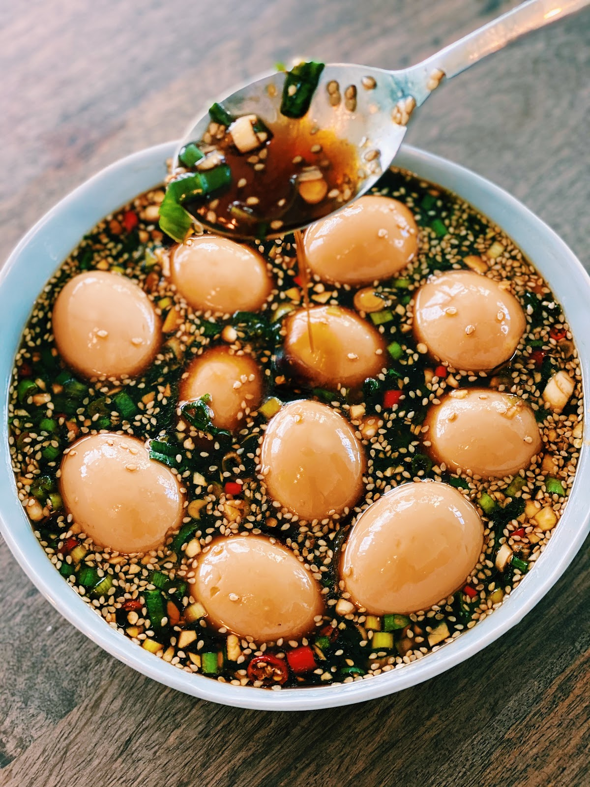

Korean Marinated Eggs

Description
Get your rice ready because these delicious, garlicky, and savory Korean Marinated Eggs will be your go-to side dish for breakfast, lunch, and dinner!
If you never tried Korean Marinated Eggs – Mayak Gyeran, you are seriously missing out. The egg yolk is gooey and soft on the inside, while the egg is marinated in a savory, spicy, and sweet sauce that pairs perfectly with a hot bowl of rice! Mayak Gyeran is easy and affordable to make, and I promise you will love it too!
Ingredients
- A dozen Eggs
- 2 tsp of salt
- 2 tbsp of Vinegar
- 6 cloves of Garlic (minced)
- 2 Korean Green Pepper (chopped)
- 1 Red Chili (chopped & optional)
- 3 stalks of Green Onion (chopped & optional)
- 1 tbsp of Sesame Seeds
- 1 cup of Soy Sauce
- 1/2 cup of Honey
- 1/2 cup of Water
- 1 tbsp of Sesame Oil (optional)
Steps
- In a pot, add in water (enough to cover all the eggs) and add salt and vinegar. Turn the heat up to medium-high and bring the water to a simmer. Once the water is boiling, carefully add in the eggs and let them cook for 6 minutes.
- After 6 minutes, remove eggs and let it rest in a bowl of ice water for at least 10 minutes. Peel carefully and set them aside.
- In a container, add garlic, chopped green pepper, red chili, green onion, soy sauce, honey, sesame oil, and water. Mix till everything is combined. Add in the peel eggs and making sure the eggs are covered in the marinade. Let the eggs rest in the fridge for at least 2 hours or better overnight.
- Serve with a bowl of hot rice and enjoy!